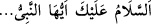
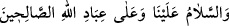
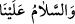

kavramalarını sağlayacak bâzı bozuk haller ve soğuk sözler göstermiştir. Kıyamete
kadar bu iddiâda bulunan herkesin durumu aynıdır. Nihâyet Mesih Deccal[230] ile onlar
son bulur. Allah Mesih Deccâl ile birlikte, âlimlerin ve mü’minlerin onun yaptıklarının
yalan ve sahte olduğuna şâhid oldukları bir takım işler yaratır.”
“(Muhammed) peygamberlerin sonuncusudur” kavli nâzil olunca kâfirler
peygamberlik kapısının kapanmış olmasını tuhaf karşıladılar. Hz. Peygamber (s.a.) bu
durumun onların gönüllerine yerleşmesi için buna bir misâl getirdi ve şöyle buyurdu:
“Benimle benden önceki diğer peygamberlerin misali, şu adamın misali gibidir:
Adam mükemmel ve güzel bir ev yapmıştır, sadece köşelerinin birinde bir kerpiç yeri
boş kalmıştır. Halk evi hayran hayran dolaşmaya başlar ve (o eksikliği görüp): “Bu
eksik kerpiç konulmayacak mı?” der. İşte ben bu kerpiçim, ben peygamberlerin
sonuncusuyum.”[231]
Bahru’l-kelâm’da der ki: “Râfizîlerden bir sınıf: “Bu dünyâ hiçbir zaman
peygambersiz olmaz. Nübüvvet Hz. Ali’ye ve onun evlâdına mîras kalmıştır. Bütün
müslümanların Hz. Ali’ye itâat etmeleri farzdır. Ona itâati gerekli görmeyen kâfir
olur.”demiştir. Ehl-i sünnet ve’l-cemâat ise: ‘Peygamberimiz’den sonra peygamber
yoktur. Çünkü Allah Teâlâ: “(Muhammed) Allâh’ın elçisi ve peygamberlerin
sonuncusudur”; Hz. Peygamber (s.a.) de: “Benden sonra peygamber yoktur”[232]
buyurmuştur. Kim Peygamberimiz’den sonra peygamber olduğunu söylerse kâfir olur.
Çünkü o nassı, yâni “(Muhammed) peygamberlerin sonuncusudur.” âyetini inkâr
etmiş olur.
Ebû Yûsuf (r.h.)’ın şöyle dediği rivâyet edilmiştir: “Bir adam çıkıp peygamberlik
iddiâsında bulunduğu zaman kim ondan mûcize göstermesini isterse kâfir olur. Çünkü o
nassı, inkâr etmiştir. Bu konuda şüphe etmesi de aynıdır. Kur’an nassı, hakkı bâtıldan
ayırmıştır. Hz. Muhammed (s.a.)’in vefâtından sonra kim peygamberlik iddiâsında
bulunursa, onun dâvâsı ancak bâtıldır.”
Ebû Hanîfe (r.h.) zamanında bir adam peygamber olduğunu iddiâ etti ve: “Bana
mühlet verin, size bir takım alâmetler/mûcizeler getireyim.” dedi. Ebû Hanife: “Bu
kimseden alâmet/mûcize taleb eden kâfir olur. Çünkü Hz. Peygamber (a.s.): “Benden
sonra peygamber yoktur” buyurmuştur.” dedi. İmam’ın Menâkıb’ında böyle
geçmektedir.
el-Fütûhâtü’l-Mekkiye’de şöyle denilmiştir: “Namaz kılan kişi tahiyyatta kendine
verdiği selamı, atıf vâvı ile Peygamberine (a.s.) verilen selâma atfetmez. Yâni “__WORD__ dedikten sonra “__WORD__ demez. Çünkü
önceki cümleye atıf yapıp “__WORD__ deseydi, kendisine nübüvvet cihetinden selam
vermiş olurdu. Halbuki Allah kıyamete kadar Muhammed (s.a.) ile risâlet kapısını
mahlûkatın hepsine kapattığı gibi bu nübüvvet kapısını da kapatmıştır. Böylece bizimle
Rasûlullah (s.a.) arasında münâsebet olmadığı ortaya çıkmış oldu.Çünkü Rasûlullah
(s.a.) bizim için imkansız olan bir mertebededir. Onun için biz atıf yapmadan kendi